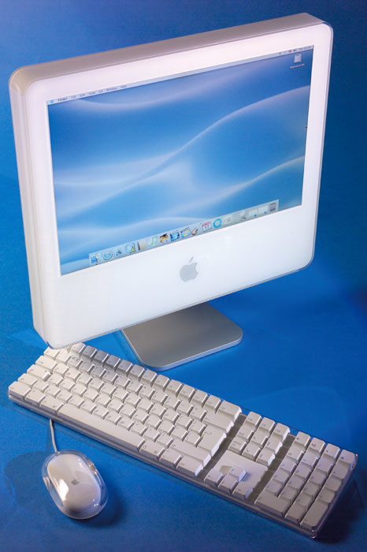
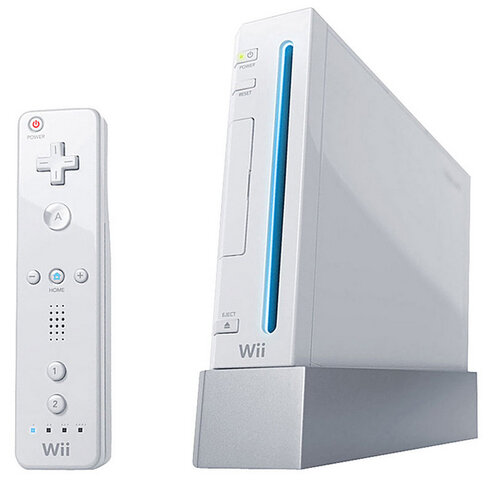
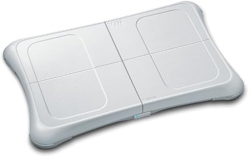

Quand j'était en primaire, j'utilisais des équipements datant de 2006.

J'avais un ordinateur, le Imac, et ses équipements provenants d'Apple. Cet ordinateur m'a fait découvrir le monde d'Internet, des jeux vidéos, ect... C'est pour cette raison que je me suis tourné vers l'informatique après le collège.
Mes parents avaient une console wii avec la balance board wii. J'y jouais soit à Mario Kart Wii, soit à Wii Sports.

